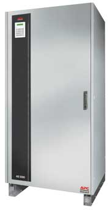
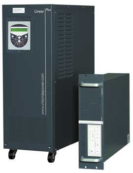
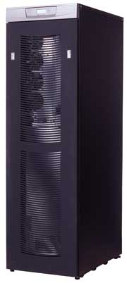
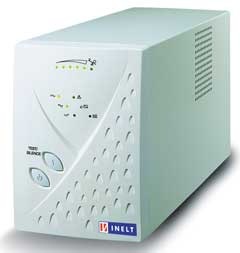
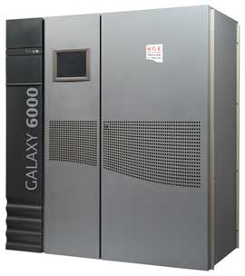
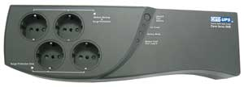
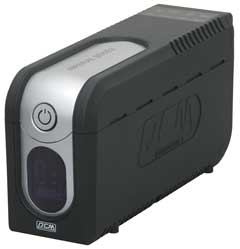
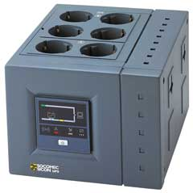
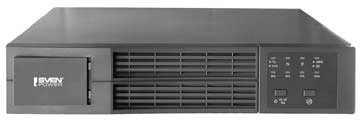
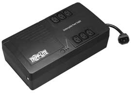

Мы предлагаем вниманию читателей краткий обзор новых моделей источников бесперебойного питания - как реально появившихся на нашем рынке с начала 2006 г., так и тех, поставки которых в Россию начнутся до конца первого полугодия. Компании-производители упоминаются в обзоре по алфавиту.
APC
За отчетный период модельный ряд компании APC (http://www.apc.ru) пополнился трехфазным ИБП класса high-end AIS 5000, построенным по топологии двойного преобразования on-line с гальванической изоляцией входов и выходов. ИБП предназначен для защиты технологического оборудования критичных для бизнеса производственных процессов. Заказчикам доступны модели мощностью от 10 до 100 кВ.А, обеспечивающие, в зависимости от нагрузки и используемых батарей, от 5 мин до почти 3 ч автономной работы оборудования. Для повышения надежности энергоснабжения оборудования возможно резервирование нескольких AIS 5000 по схеме N+1.
|  | AIS 5000 - модель класса high-end от APC.
|
Входное напряжение ИБП равно 400 В с допустимым диапазоном от +10 до -15%; частота на входе - 50 (± 6%) Гц. Диапазон допустимого колебания напряжения в режиме байпаса составляет ± 10%. Выходное напряжение ИБП равно 400 В; частота на выходе в режиме внутренней стабилизации - 50 (± 0,1%) Гц. Искажения входного тока составляют менее 12%. Гармонические искажения входного тока не превышают 3% с линейной нагрузкой и 5% с нелинейной нагрузкой.
Пик-фактор у AIS 5000 составляет 3 к 1. Коэффициент мощности в режиме с опережением равняется 0,9; в режиме с задержкой - 0,7.
Допустимая перегрузка ИБП: до 150% длительностью не более 1 мин, до 125% длительностью не более 10 мин. В режиме байпаса допустимая перегрузка достигает 1000%.
Chloride
Компания Chloride (http://www.chloride.ru) отметилась новой линейкой ИБП средней мощности 80-NET, а также обновлениями в уже хорошо известных на рынке сериях 90-NET и Linear Plus.
Устройства серии 80-NET выполнены по технологии цифрового двойного преобразования с векторным контролем, при этом алгоритм Intelligent double conversion позволяет выбирать текущий режим для оптимизации работы в зависимости от качества электропитания во входной сети. ИБП может функционировать либо в режиме двойного преобразования, обеспечивая идеальное качество электропитания и максимальную защиту нагрузки, либо в цифровом линейно-интерактивном режиме, что позволяет существенно сэкономить на эксплуатационных расходах благодаря высокому КПД. Компания предлагает модели мощностью от 60 до 120 кВ.А. Батареи, обеспечивающие необходимую длительность автономной работы, устанавливаются во внешние батарейные кабинеты (шкафы), выполненные в том же дизайне, что и ИБП. Используя опцию Battery Management, подключенные батареи можно тестировать индивидуально на каждом аккумуляторном моноблоке.
На базе 80-NET доступны параллельные конфигурации с избыточностью N+1 и параллельные расширяемые конфигурации - до восьми ИБП одинаковой мощности можно соединить в параллельную систему мощностью до 960 кВ.А. Отдельные терминалы вводов основной и резервной байпасной линий обеспечивают надежность и гибкость проектных решений при установке ИБП.
Номинальное напряжение на входе ИБП равно 400 В с диапазоном допустимых отклонений от +15 до -20%; частота на входе - 50 или 60 (± 6%) Гц по выбору. Выходное напряжение ИБП составляет 400 В; частота на выходе в режиме внутренней синхронизации - 50 или 60 (±0,1%) Гц по выбору. Суммарные гармонические искажения (THDi) входного тока у 80-NET не превышают 3%.
КПД устройств серии 80-NET в цифровом линейно-интерактивном режиме составляет 98%, в режиме двойного преобразования - 94%. Пик-фактор равен 3 к 1. Коэффициент мощности на входе не менее 0,99; на выходе - 0,8. Устройства серии 80-NET способны автоматически увеличивать номинальную выходную мощность на 10% при температуре окружающей среды +25°С.
Перегрузочная способность инвертора ИБП составляет не более 1 мин при нагрузке 150% и порядка 10 мин при нагрузке 125%.
В комплект дополнительного оборудования ИБП серии 80-NET входит ПО MopUPS Professional, комплект связи по протоколам J-bus и PROFIBUS, а также адаптер ManageUPSnet.
Серия 90-NET - трехфазные on-line ИБП большой мощности - существует на рынке достаточно давно и, пожалуй, не нуждается в дополнительных представлениях. В 2006 г. произошло лишь ее техническое обновление.
Устройства серии 90-NET выпускаются мощностью от 60 до 800 кВ.А, при этом аккумуляторные батареи располагаются во внешних батарейных шкафах. Архитектура серии позволяет строить параллельные конфигурации, содержащие до восьми блоков, соединенных по распределенной, централизованной и HFC (High Fault Clearance) схемам.
Напряжение на входе выпрямителя ИБП равно 400 В либо (по выбору) 380 или 415 В. Диапазон приемлемых колебаний напряжения составляет от +15 до -25%. Параметры напряжения на резервной линии аналогичны основной. Допустимое отклонение находится в пределах ± 10%. Частота на входе - 50 или 60 (± 5%) Гц по выбору. Напряжение на выходе - 400 В либо (по выбору) 380 или 415 В. Частота в режиме внутренней синхронизации с собственным кварцевым генератором равна 50 или 60 (± 0,05%) Гц по выбору. Искажения входного тока варьируются в пределах от 5 до 30% для ИБП мощностью до 200 кВ.А, а для ИБП мощностью от 250 кВ.А составляют 5%.
КПД устройств серии 90-NET в режиме двойного преобразования варьируется от 92 до 93% в зависимости от мощности ИБП. КПД в цифровом интерактивном режиме составляет 97%.
Пик-фактор для ИБП 90-NET равен 3 к 1. Коэффициент мощности на входе в режиме PFC составляет 0,92 для моделей мощностью до 400 кВ.А включительно и 0,8 для моделей мощностью от 500 кВ.А. Коэффициент мощности на выходе ИБП равен 0,8. Устройства серии 90-NET способны автоматически увеличивать номинальную выходную мощность до 110% номинала при температуре окружающей среды +25°С, до 105% при температуре +30°С и до 100% при температуре +40°С.
Допустимая перегрузка ИБП: до 150% длительностью не более 1 мин, до 125% длительностью не более 10 мин, до 700% - не более 600 мс, до 1000% - не более 100 мс.
Серия on-line ИБП средней мощности с однофазным выходом Linear Plus в 2006 г. также подверглась модернизации. Устройства серии Linear Plus существуют в башенном и стоечном исполнении, при этом заказчикам доступны модели мощностью 6 и 10 кВ.А. Стоечные модели имеют одну фазу как на выходе, так и на входе, а среди башенных моделей присутствует также ИБП с трехфазным входом. Батареи, обеспечивающие необходимую длительность автономной работы, устанавливаются внутри корпуса ИБП, а для увеличения времени автономности можно использовать внешние батарейные кабинеты.
|  | ИБП серии Linear Plus - в башенном и стоечном исполнении.
|
Благодаря полностью независимому цифровому контролю заказчикам доступны параллельные расширяемые конфигурации с избыточностью N+1 - до трех ИБП Linear Plus можно соединить в параллельную систему. Для повышения гибкости и надежности в системах серии Linear Plus предусмотрены отдельные терминалы вводов основной и резервной байпасной линий.
Для однофазных моделей номинальное напряжение на входе ИБП составляет 230 В, для модели с трехфазным входом этот показатель равняется 400 В. Диапазон допустимых отклонений в обоих случаях составляет от +20 до -25%. Частота на входе - 50 или 60 (± 5%) Гц по выбору. Выходное напряжение ИБП равно 220, 230 или 240 В - в зависимости от параметров, определенных заказчиком. Частота на выходе в режиме внутренней синхронизации - 50 или 60 (± 0,05%) Гц по выбору. Суммарные гармонические искажения входного тока ИБП Linear Plus не превышают 5% у однофазных моделей и 25% у трехфазного устройства.
КПД устройств серии Linear Plus при 100%-ной нагрузке составляет 92%. Пик-фактор ИБП - менее 3. Коэффициент мощности на входе не менее 0,97 у однофазных устройств, не менее 0,95 у модели с трехфазным входом. Коэффициент мощности на выходе равен 0,7.
Перегрузочная способность инвертора ИБП составляет не более 1 мин при нагрузке 125%, не более 10 с при нагрузке 150% и примерно 2 с при нагрузке 300%.
Eaton Powerware
Новые трехфазные on-line ИБП Powerware 9355 20 кВ.А и Powerware 9355 30 кВ.А от компании Eaton (http://www.powerware.com/Russia), хотя и были формально представлены в самом конце 2005 г., на российский рынок реально попали уже в нынешнем году, а в самом конце марта на отечественном рынке была представлена еще одна модель - Powerware 9355 40 кВ.А. Таким образом, серия Powerware 9355 фактически была окончательно сформирована в качестве универсального предложения Eaton в секторе устройств средней мощности.
|  | Серия ИБП средней мощности - Powerware 9355.
|
Все три модели имеют характерный для серии Powerware 9355 универсальный дизайн и включают в себя инновационные решения Eaton, в частности, бестрансформаторную технологию, обеспечивающую высокий КПД при небольших массогабаритных параметрах ИБП. Они поддерживают модульную масштабируемую технологию параллельной работы Hot Sync, которая позволяет соединять в конфигурации с избыточностью N+1 до четырех устройств. К сильным сторонам Hot Sync следует отнести независимое распределение нагрузки даже при отсутствии управляющих кабелей связи между ИБП; как следствие, система не имеет единой точки отказа и работоспособна не только при выходе из строя, например, одного из ИБП, но даже при нарушении кабелей связи между ними. В новых моделях заказчики могут использовать до четырех внутренних аккумуляторных блоков, обеспечивая время резервирования в пределах от 5 до 31 мин, в зависимости от конкретной модели.
Номинальное рабочее напряжение на входе ИБП составляет 400 В, его регулировка возможна в диапазоне ± 20%. Частота тока на входе по выбору - либо 50, либо 60 (± 10%) Гц. Выходное напряжение ИБП равно 380, 400 или 415 В, в зависимости от определенных заказчиком параметров. Частота на выходе в режиме внутренней синхронизации - 50 или 60 Гц по выбору. Коэффициент нелинейных искажений потребляемого тока не превышает 5%.
КПД устройств Powerware 9355 с мощностью 20 - 40 кВ.А в режиме двойного преобразования находится на уровне 92% при номинальной нелинейной нагрузке. Коэффициент мощности ИБП новой серии на входе - не менее 0,99. Коэффициент мощности на выходе для емкостной нагрузки составляет 0,8, для нагрузки индуктивного характера - 0,7.
ИБП Powerware 9355 новой серии допускают при работе в нормальном режиме перегрузку до 150% длительностью не более 5 с или до 125% длительностью не более 1 мин. При работе в режиме байпаса возможна перегрузка в 1000% длительностью не более 5 мс.
INELT
Практически на рубеже 2006 г. компания INELT (http://www.inelt.ru) объявила о выпуске на российский рынок ИБП из серии Monolith M, построенных по бестрансформаторной технологии с двойным преобразованием напряжения. Вниманию заказчиков были представлены модели с фазностью 1:1 - M6000 и M10000, а также с фазностью 3:1 - M10000 и M20000. Кроме того, в первом полугодии 2006 г. на рынок поступили линейно-интерактивные ИБП серии Intelligent XLT, как в напольном исполнении - модели 750XLT и 1000XLT, так и в стоечном - модели 2000RTXLT и 3000RTXLT.
Отличительная особенность новых устройств серии Monolith M - возможность параллельного включения до трех ИБП с резервированием или наращиванием мощности, что позволяет создать систему бесперебойного питания мощностью до 30 кВ.А (фазность 1:1) либо 60 кВ.А (фазность 3:1) без резервирования или же систему с резервированием N+1 (мощностью соответственно 20 либо 40 кВ.А). Помимо этого ИБП Monolith M оснащаются корректором входного коэффициента мощности, что в целом благоприятно сказывается на обеспечивающей энергоинфраструктуре. Заказчикам доступны модели Monolith M мощностью 6, 10 и 20 кВ.А - M6000, M10000 и M20000 соответственно. Аккумуляторные батареи, поддерживающие непрерывность рабочего процесса заказчика, в случае моделей Monolith M с трехфазным входом устанавливаются во внешние батарейные шкафы. В случае с однофазными моделями вопрос решается двояко: в моделях M6000 и M10000 имеются аккумуляторы, обеспечивающие 8 и 5 мин автономии соответственно, однако вместе с тем существуют разновидности M6000 и M10000 (с индексом LT), лишенные встроенных батарей. В последнем случае необходимые батареи устанавливаются во внешние батарейные кабинеты.
Номинальное напряжение на входе однофазных ИБП составляет 220 В с диапазоном допустимых отклонений от +25 до -20%. У трехфазных ИБП напряжение на входе равно 400 В с допустимыми отклонениями от +20 до -25%. Частота на входе в обоих случаях составляет 50 (± 8%) Гц. Выходное напряжение ИБП равно 220, 230 или 240 В по выбору пользователя. Частота на выходе - 50 (± 1%) Гц. Гармонические искажения входного тока не превышают 2% с линейной нагрузкой и 6% с нелинейной нагрузкой.
КПД устройств серии Monolith M - не менее 88%, пик-фактор равен 3 к 1.
ИБП серии Intelligent XLT пришли на смену хорошо себя зарекомендовавшей серии Intelligent LT. Основное их назначение - защита ответственной нагрузки, требующей длительной автономной работы (АТС, серверы, промышленное и телекоммуникационное оборудование). Заказчикам доступны устройства мощностью 750 и 1000 В.А - модели 750XLT и 1000XLT (выпускаются в напольном исполнении), а также мощностью 2000 и 3000 В.А - 2000RTXLT и 3000RTXLT соответственно (обе в стоечном исполнении).
|  | ИБП INELT серии Intelligent XLT в напольном исполнении.
|
Отличительная особенность серии Intelligent XLT - инвертор, модифицированный для многочасовой автономной работы. Кроме того, ИБП не содержат встроенных батарей - они сконструированы в расчете на подключение свинцово-кислотных необслуживаемых батарейных комплектов различных производителей емкостью до 250 А.ч и напряжением 24 В для Intelligent 750XLT и 1000XLT или 48 В - для остальных моделей. Время автономной работы ИБП, в зависимости от емкости подключенных батарей и мощности защищаемой нагрузки, изменяется от 33 мин до 29 ч.
Номинальное напряжение на входе ИБП составляет 220, 230 или 240 В с диапазоном допустимых отклонений ± 25%. Частота на входе - 50 или 60 (± 6%) Гц по выбору. Выходное напряжение ИБП равно 230 В с отклонениями в пределах от +10 до -15%. Коэффициент мощности на выходе - не менее 0,7. Перегрузочная способность инвертора ИБП - не более 30 с при нагрузке до 125%.
MGE UPS Systems
Компания MGE (http://www.mgeups.ru) представила в первой половине 2006 г. сразу несколько новых продуктов: однофазные on-line ИБП небольшой мощности серии Pulsar M и трехфазные on-line ИБП - серию средней мощности Galaxy 5000 и высокомощные устройства серии Galaxy 6000.
Серия ИБП Pulsar M представлена моделями Pulsar M 2200 мощностью 2200 В.А, Pulsar M 3000 и Pulsar M 3000XL, обе мощностью 3000 В.А. В комплект поставки M 2200 и M 3000 входят батареи, обеспечивающие длительность автономной работы при 70%-ной нагрузке 12 и 10 мин соответственно. Дополнительные аккумуляторы устанавливаются во внешние батарейные кабинеты, позволяя довести время автономии до 200 и 150 мин соответственно при тех же условиях. Модель M 3000XL, ИБП заказной конфигурации, предлагается без предустановленных батарей.
При помощи опционального комплекта ModularEasy пару ИБП серии Pulsar M можно объединить в конфигурацию с избыточностью N+1 либо соединить в параллель, повысив совокупную мощность вдвое.
Номинальное напряжение на входе ИБП составляет 230 В с диапазоном допустимых отклонений от +25 до -20%. Частота на входе - 50 или 60 (± 15%) Гц по выбору. Номинальное выходное напряжение ИБП равно 230 В, но заказчику также доступен выбор - 200, 208 или 240 В. Частота на выходе - также 50 или 60 Гц по выбору.
Трехфазные масштабируемые ИБП высокой надежности Galaxy 5000 и Galaxy 6000 предназначены для защиты критически важных объектов заказчика в непрерывном режиме 24х7х365. Эти модели пришли на смену продуктам семейства Galaxy PW и Galaxy соответственно. Устройства серии Galaxy 5000 имеют мощность от 20 до 120 кВ.А, серии Galaxy 6000 - в диапазоне от 250 до 800 кВ.А. ИБП Galaxy 5000 мощностью до 80 кВ.А снабжены встроенными в корпус аккумуляторами, однако допускают расширение емкости с помощью внешнего шкафа. Устройства мощностью 100 и 120 кВ.А, а также серия Galaxy 6000 оснащаются только внешними батареями. Время автономной работы у Galaxy 5000 в зависимости от емкости аккумуляторов и мощности нагрузки варьируется от 5 мин до 8 ч. Время автономной работы Galaxy 6000 в серийных конфигурациях находится в диапазоне 8-60 мин, однако в рамках дополнительного заказа доступно и большее.
|  | Трехфазные ИБП высокой мощности Galaxy 6000.
|
Архитектура Galaxy позволяет заказчикам строить параллельные расширяемые конфигурации: в серии Galaxy 5000 в единую параллельную систему можно соединять максимум шесть ИБП, в серии Galaxy 6000 - максимум четыре.
Входное напряжение Galaxy 5000 составляет 400 В с допустимым диапазоном от +20 до -35%. Частота на входе - 50 или 60 (± 8%) Гц по выбору. В режиме байпаса допустимы колебания напряжения в диапазоне от +20 до -15%. Выходное напряжение ИБП равно 400 В с допустимым диапазоном ± 3%, возможны значения 380 и 415 В. Частота на выходе - 50 или 60 Гц по выбору. Искажения входного тока не превышают 3%, искажения тока на выходе - менее 2%.
КПД устройств серии Galaxy 5000 в режиме двойного преобразования составляет не менее 94%, в экономичном режиме - 97%. Пик-фактор Galaxy 5000 равен 3 к 1. Коэффициент мощности на входе - не менее 0,99.
Допустимая перегрузка ИБП Galaxy 5000: до 150% длительностью не более 1 мин, до 125% длительностью не более 10 мин.
Входное напряжение Galaxy 6000 составляет 400 В с допустимым диапазоном ± 20%; частота на входе - 50 или 60 (± 10%) Гц по выбору. Диапазон допустимых колебаний напряжения в режиме байпаса - ± 20%. Выходное напряжение ИБП равно 380, 400 или 415 В с допустимым диапазоном отклонений ± 3%. Частота на выходе - 50 или 60 Гц по выбору. Искажения входного тока - менее 4%, тока на выходе - менее 3%.
КПД устройств серии Galaxy 6000 в режиме двойного преобразования составляет не менее 95%. Пик-фактор Galaxy 6000 равен 3 к 1. Коэффициент мощности на входе в режиме PFC - не менее 0,95.
ИБП допускает перегрузки до 165% длительностью не более 1 мин и до 125% длительностью не более 10 мин.
Opti UPS
Компания Opti UPS (http://www.opti-ups.com) в начале 2006 г. отметилась целым рядом новинок. Вниманию заказчиков предложена начальная off-line модель CS500B, рассчитанная на защиту единичного ПК и сопутствующей периферии (нагрузка до 300 Вт), on-line ИБП средней мощности для надежной и высококачественной защиты критически важного оборудования - DS3000B-RM и линейно-интерактивная модель PS1500B-RM, обеспечивающая высокий уровень качества энергоснабжения и КПД преобразования при низкой стоимости владения.
Модель CS500B мощностью 500 В.А представляет собой логическое развитие стабилизатора напряжения. Она имеет две розетки бесперебойного питания с защитой от скачков напряжения и две розетки лишь с защитой от скачков напряжения, а также автоматический предохранитель, защищающий ИБП от перегрузок. По истечении срока годности батарея заменяется самим пользователем, более того, при замене батареи подключенные устройства могут продолжать работать, процедура замены проста и безопасна.
|  | Opti UPS CS500B - продолжение идеи стабилизатора напряжения.
|
Входное напряжение CS500B составляет 230 В, можно также установить значения 220 или 240 В. Частота на входе - 50 или 60 (± 10%) Гц по выбору. Выходное напряжение ИБП равно 230 В, частота - 50 или 60 Гц. Пик-фактор CS500B составляет 3 к 1.
К достоинствам модели DS3000B-RM, предназначенной для поддержки работы оборудования жесткого реального времени, медицинского оборудования, прочих устройств с высокими требованиями к качеству электропитания, можно отнести режим высокой эффективности, снижающий до минимума непроизводительные расходы электроэнергии и таким образом повышающий КПД. ИБП номинальной мощностью 3000 В.А при 100%-ной нагрузке обеспечивает 5 мин автономной работы от встроенных батарей. Можно также подключать дополнительные внешние батарейные блоки.
Номинальное входное напряжение модели DS3000B-RM равняется 230 В, частота тока - 50 или 60 Гц по выбору. Заказчики могут сконфигурировать ИБП на входное напряжение в 208, 220 или 240 В. Допустимы отклонения в диапазоне ± 30%. Выходное напряжение DS3000B-RM составляет 230 В при допустимом диапазоне отклонений ± 3%. Частота на выходе - 50 или 60 Гц по выбору.
Пик-фактор модели DS3000B-RM равен 3 к 1. Перегрузочная способность ИБП обеспечивает не более 10 с автономной работы при уровне нагрузки до 150% и не более 1 мин при нагрузке до 125%.
Модель PS1500B-RM нацелена на профессиональных потребителей, более всего заинтересованных в оптимальном балансе между ценой и качеством электропитания. Номинальная мощность ИБП составляет 1500 В.А - по этому признаку, а также по оптимальному набору параметров PS1500B-RM наилучшим образом подходит для защиты большинства серверов. При 100%-ной нагрузке он обеспечивает 5 мин автономной работы от встроенных батарей. ИБП выпускаются как в башенном исполнении, так и в корпусе для монтажа в 19-дюйм стойку.
Номинальное входное напряжение модели PS1500B-RM составляет 230 В, допустимы отклонения в диапазоне ± 25%. Частота входного тока - 50 или 60 (± 10%) Гц по выбору. Заказчики могут сконфигурировать ИБП на входное напряжение в 208, 220 или 240 В. Допустимый диапазон отклонений ± 30%. Выходное напряжение составляет 230 В, частота - 50 или 60 Гц по выбору.
Пик-фактор модели PS1500B-RM равен 2 к 1. ИБП выдерживают перегрузку на уровне до 120% длительностью не более 5 с и до 110% длительностью не более 10 с.
Powercom
В первой половине 2006 г. в модельном ряду компании Powercom (http://www.powercom.com) появился новый линейно-интерактивный ИБП Imperial, предназначенный для защиты офисного оборудования, в том числе ПК, сетевого оборудования и АТС, торгового оборудования, систем пожарной и охранной сигнализации. Заказчикам доступны модели мощностью от 425 до 2000 В.А, выполненные в трех различающихся конструктивах - младшая серия IMP (от 425 до 1000 В.А), усовершенствованная средняя серия IMD (от 425 до 1000 В.А) со светодиодным дисплеем на передней панели и старшая серия IMD (от 1025 до 2000 В.А), отличающаяся корпусировкой. В зависимости от установленных батарей и подключенной нагрузки они обеспечивают от 8 до 45 мин автономной работы оборудования.
|  | Новинка Powercom - ИБП Imperial для защиты офиса.
|
Входное напряжение ИБП составляет 220 В с допустимым диапазоном ±25%. Частота на входе - 50 (± 10%) Гц. Выходное напряжение ИБП равно 220 В с отклонениями в пределах ± 5%, частота на выходе в режиме внутренней стабилизации - 50 (± 2%) Гц. ИБП способны увеличивать на 15% выходное напряжение при понижении входного напряжения на 9-25% от номинального, а также уменьшать на 13% выходное напряжение при повышении входного на 9-25% от номинального.
Допустимая перегрузка ИБП: до 130% длительностью не более 3 с, до 110% длительностью не более 1 мин.
Socomec Sicon
Компания Socomec Sicon (http://www.socomec.com) отметилась линейкой ИБП начального уровня под общим названием Netys. Она включает в себя три серии устройств - Netys PL, предназначенные для защиты некритичного офисного и торгового оборудования, Netys PE для защиты корпоративных рабочих мест и Netys PR, ориентированная на профессиональное ИТ-оборудование. Модель Netys PL выполнена в корпусе с розетками Shuko, рассчитана на нагрузки мощностью от 550 до 750 В.А и обеспечивает до 30 мин автономии. Основная массовая линейно-интерактивная модель Netys PE защищает нагрузки от 400 до 1000 В.А и обеспечивает время резервирования в пределах от 8 до 45 мин. Линейно-интерактивная модель с автоматическим регулятором напряжения Netys PR рассчитана на нагрузки от 1000 до 3000 В.А и предоставляет защиту на протяжении 8 мин. В случае моделей мощностью более 1500 В.А можно подключать внешние батареи повышенной емкости.
|  | Модели Socomec Sicon начального уровня - серия Netys PL.
|
Номинальное входное напряжение всех ИБП равно 230 В. Диапазон допустимых отклонений у Netys PL и Netys PE составляет от -25 до +20%, у Netys PR - от -30 до +20%. Частота на входе составляет 50 или 60 Гц с автоматическим выбором. Выходное напряжение ИБП равно 230 В, частота - 50 либо 60 Гц по выбору.
Sven
За отчетный период компания Sven (http://www.sven.ru) выпустила серию линейно-интерактивных ИБП Power Smart RM, включающую модели RM 2000 2U и RM 3000 2U мощностью 2000 и 3000 В.А соответственно. Эти устройства предназначены в первую очередь для защиты важного компьютерного оборудования - серверов, систем хранения данных, сетевой инфраструктуры, и обеспечивают время автономной работы 3-5 мин, в зависимости от нагрузки.
|  | Серия Power Smart RM от Sven.
|
Номинальное рабочее напряжение на входе ИБП составляет 220 В, при этом возможны его колебания в диапазоне от -30 до +20%. Частота тока на входе - по выбору 50 либо 60 Гц. Выходное напряжение ИБП равно 220 В с допустимым диапазоном от -10 до +5%, частота составляет 50 или 60 (± 2%) Гц по выбору. Коэффициент мощности ИБП обеих моделей равен 0,7.
Tripp Lite
Компания Tripp Lite (http://www.tripplite.com) в начале 2006 г. вывела на рынок сразу несколько линейно-интерактивных ИБП - серию AVRX, включающую модели AVRX550U и AVRX750U, и модель SMX1000LCD. ИБП серии AVRX соответственно наименованию имеют мощность 500 и 750 В.А, обеспечивая 3 и 4 мин автономии при полной нагрузке. ИБП SMX1000LCD мощностью 1000 В.А поддерживает непрерывную работу на протяжении 3 мин, также при 100%-ной нагрузке.
|  | ИБП Tripp Lite серии AVRX.
|
Номинальное входное напряжение у всех трех моделей составляет 230 В. Частота тока определяется автоматически - 50 или 60 Гц. Выходное напряжение равно 230 В с допустимым диапазоном колебания при работе от батарей ± 5%. Частота на выходе - 50 или 60 (± 10%) Гц по выбору. При работе от батарей частота на выходе с инвертора равняется 50 (± 1%) Гц.